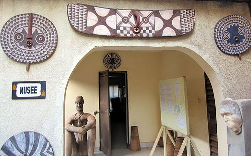
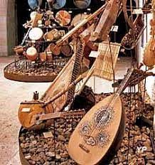
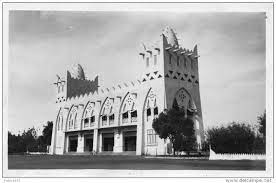

-
La cathédrale notre Dame de Lourdes
de Bobo-Dioulasso -

Les silures de Dafra
-
Le Vieux Quartier de Dioulasso-Bâ
-
Le Grand Marché de Bobo Dioulasso
-
La tombe de la Princesse Guimbi Ouattara
-

La Guinguétte
-
Village de Koro
- 
Le Musée Municipal
- 
Le Musée de la Musique d’Hier et
d’Aujourd’hui - 
La Place de la Gare